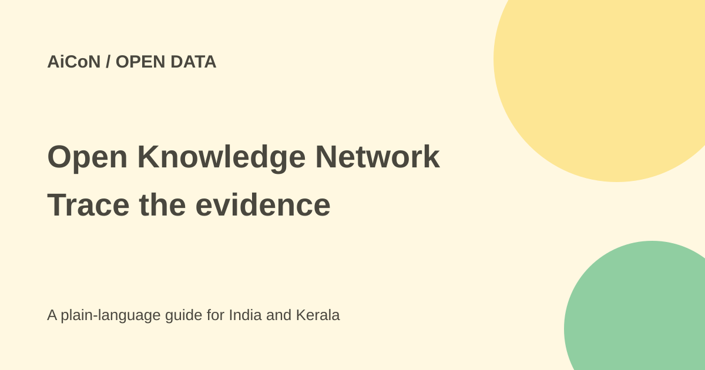

NSF Open Knowledge Network: linked data, not perfect facts
The NSF Open Knowledge Network connects public datasets across fields. It can help trace an answer to structured evidence, but a linked fact still needs its source, date and meaning checked.

What is the Open Knowledge Network?
The US National Science Foundation announced the network on 25 September 2026. NSF describes 43 interconnected knowledge graphs and tens of billions of connected facts across health, environment, justice, manufacturing and security. The current portal calls it a network of more than 40 graphs.
A knowledge graph represents entities and the relationships between them in a structured form. A federated network connects graphs maintained by different teams rather than placing every subject into one flat table. That can make cross-field questions easier to explore, but it does not remove differences in definitions, dates and coverage.
Who is it for, and is it free?
NSF says the network is live and open to the public. The graph catalog can be read without creating an account during this check. It is useful to researchers, developers and people investigating questions that cross datasets. It is infrastructure and a discovery portal, not a general chat app that guarantees an answer to any question.
Public access does not establish one licence, unlimited API quota or identical rules for every linked source. Before bulk downloading or redistributing data, read the selected graph's access terms and the licences of its underlying datasets. This guide did not test every endpoint or establish a universal commercial-reuse grant.
How to explore a question
- Start at the official okn.us portal with a specific question and the geography you need.
- Choose a relevant graph from the catalog. The checked list includes scientific publications, water, soil, manufacturing and biomedical subjects.
- Read its source description and follow its own documentation. Confirm what its identifiers and relationships mean.
- Inspect the original dataset or publication behind a result, including update date and stated limitations.
- When linking two graphs, check that identifiers refer to the same entity and that dates or geographic units are compatible.
- Save the query method, source links and version information with your output so another person can reproduce the result.
- Check licence and access conditions before building an application or sharing a derived dataset.
What cross-graph work can do
NSF gives examples of linking manufacturing and supply-chain data to investigate cybersecurity exposure across more than 7,000 semiconductor products from 247 companies, and connecting contamination data with soil productivity. These are NSF's examples of the network's value, not tasks performed for this guide.
The catalog includes SemOpenAlex for scholarly publications, GEOCONNEX for US water-data discovery, SecureChain for software supply chains and several health and environmental graphs. A catalog entry is a starting point. Check the selected graph's actual scope before assuming it contains a particular company, river or disease.
Limits for India and Kerala
The portal explicitly emphasises connected government data and US competitiveness. Some scientific and international sources may still be useful, but a US administrative dataset should not be assumed to cover Kerala.
For a local flood, soil or public-health question, check whether the graph has Indian observations and the needed time period. Missing data is not evidence that a condition does not exist. Keep local official sources alongside the network rather than replacing them with a foreign dataset.
What changed since the original post?
The 30 September post called it a fact layer with verified facts. This guide narrows that description: structured and attributable data can improve checking, but correctness and currentness still depend on the source. It also adds per-graph access and licence checks.
Frequently asked questions
Is it a chatbot?
No. It is a public network and graph-discovery route.
Does a linked fact prove accuracy?
No. Check provenance, date, definitions and coverage.
Does it fully cover India?
No such coverage was established. The portal is strongly US-focused.
Were all graphs queried?
No. This guide checked the official announcement and public catalog.
Sources: NSF launch and graph counts · Public graph catalog. Checked 7 October 2026.